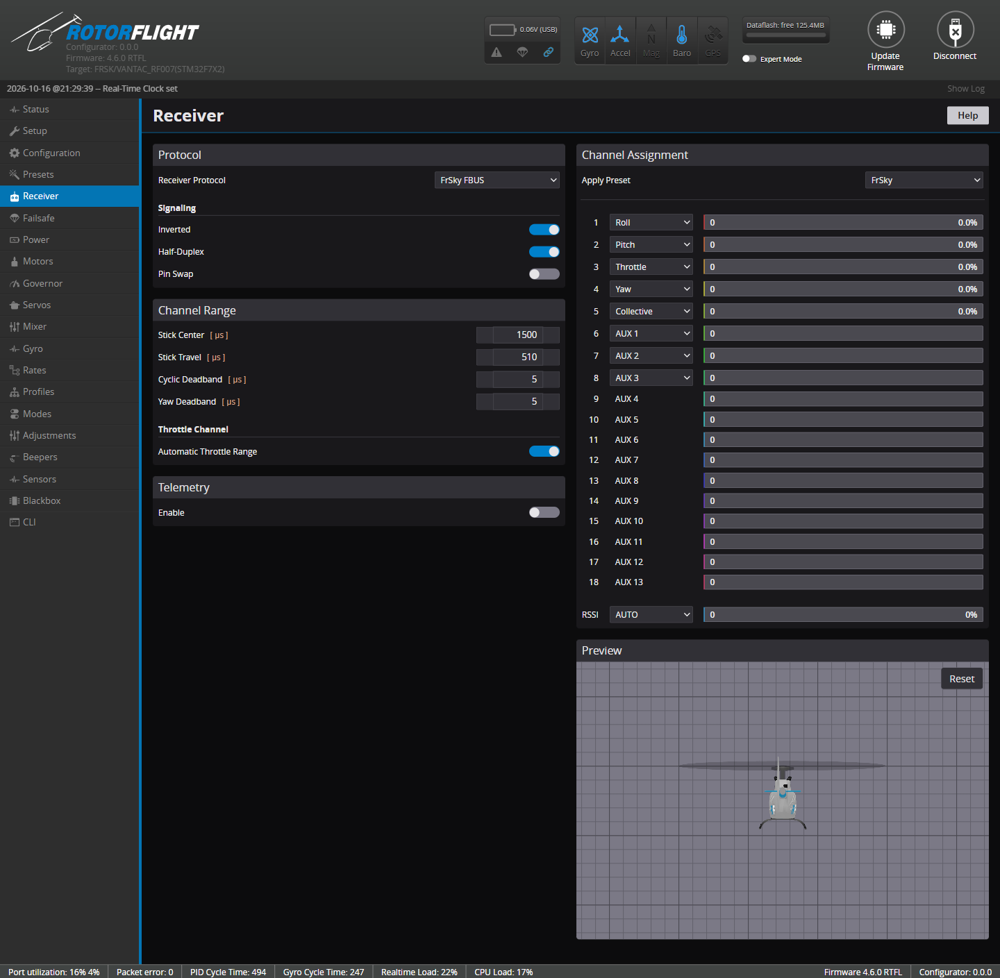

Receiver¶
Receiver protocol, channel order, stick calibration and telemetry.

Before anything shows up here, set the UART your receiver is wired to to Serial Rx on the Configuration tab, and save.
Protocol¶
Receiver Protocol must match what your receiver sends:
| Receiver | Protocol | Wiring |
|---|---|---|
| ExpressLRS, TBS Crossfire / Tracer | TBS CRSF | Receiver TX → FC RX, receiver RX → FC TX |
| FrSky (F.Bus capable: Archer, ACCESS ...) | FrSky FBUS | One wire to FC TX; Half-Duplex and Inverted on |
| FrSky F.Port | FrSky F.PORT / F.PORT2 | One wire to FC TX; Half-Duplex and Inverted on |
| Futaba, FrSky, others with SBUS | Futaba S.BUS | SBUS → FC RX; Inverted on |
| Futaba SBUS2 | Futaba S.BUS2 | One wire to FC TX; Half-Duplex and Inverted on |
| Spektrum SRXL2 receivers | Spektrum DSM/SRXL2 | One wire to FC TX |
| Spektrum satellites (DSMX) | Spektrum DSM/2048 | Satellite → FC RX, 3.3 V supply |
| FlySky | Flysky IBUS / IBUS2 | IBUS → FC RX |
| Jeti | Jeti EXBUS | One wire to FC TX |
| JR / XBus | JR XBUS Mode A / B or XBUS/RJ01 | XBUS → FC RX |
| Graupner HoTT | Graupner SUMD | SUMD → FC RX |
| ImmersionRC Ghost | ImmersionRC GHOST | One wire to FC TX |
Receivers with telemetry built into the link (CRSF/ELRS, F.Bus, F.Port, SRXL2, iBUS2, EXBUS, Ghost) let you tune from your radio with the Lua suites. With other receivers, add a separate telemetry wire (for example S.Port alongside SBUS -- see Configuration) or use Adjustments.
Flight controllers with a built-in receiver connector
Rotorflight flight controllers usually have a port labelled for the receiver, already set up correctly. Check your flight controller's hardware page.
For Spektrum, see the receiver model and settings table for supply voltages, UART connections and protocol choices, plus binding instructions.
Signaling¶
| Option | Use |
|---|---|
| Inverted | Un-inverts SBUS, F.Port and F.Bus, which are inverted signals. |
| Half-Duplex | Sends and receives on the TX pin -- for single-wire protocols such as SBUS2, F.Port, F.Bus, SRXL2. |
| Pin Swap | Swaps the UART's RX and TX pins. |
Inverted and Pin Swap need an F7, G4 or H7 flight controller. F4 processors can't invert a UART: use a non-inverted signal from the receiver, or a pad the board maker has fitted with an inverter.
Bind Receiver appears when the flight controller can bind the selected receiver itself, for example Spektrum receivers and built-in SPI receivers.
Channel Assignment¶
The flight controller needs to know which channel is which. Pick the Apply Preset that matches your radio, then check every bar moves with the right stick:
| Channel | ELRS | FrSky | Futaba / Hitec | Spektrum / Graupner / JR |
|---|---|---|---|---|
| 1 | Roll | Roll | Roll | Throttle |
| 2 | Pitch | Pitch | Pitch | Roll |
| 3 | Collective | Throttle | Throttle | Pitch |
| 4 | Yaw | Yaw | Yaw | Yaw |
| 5 | AUX 1 (arm) | Collective | AUX 1 | AUX 1 |
| 6 | Throttle | AUX 1 | Collective | Collective |
| 7+ | AUX 2... | AUX 2... | AUX 2... | AUX 2... |
Any other order works too: pick the function for each channel from its drop-down.
ELRS: arm on channel 5
With ExpressLRS, the arm switch must be on channel 5 (AUX 1). ELRS uses it to know the model is armed, and sends it with every packet.
Rotorflight has separate Collective and Throttle channels. Set up a collective pitch curve and a throttle curve (or a flat throttle with the governor) in your radio, on their own channels -- don't mix pitch into throttle.
The bar directions must be:
| Stick | Bar moves |
|---|---|
| Right stick right (roll right) | Roll to the right (positive) |
| Right stick forward (pitch forward) | Pitch to the right (positive) |
| Rudder right (yaw right) | Yaw to the right (positive) |
| Collective up | Collective to the right (positive) |
| Throttle up | Throttle to the right |
If one goes the wrong way, reverse that channel in your radio. Don't use radio trims on cyclic or yaw -- keep them at zero.
RSSI sets where signal strength comes from: AUTO for protocols that report it, a channel, or ADC for a receiver's analogue RSSI output.
The Preview shows how the stick inputs turn into rotation rates through your Rates. With the MSP receiver protocol, Control sticks opens virtual sticks to drive the flight controller from the Configurator.
Channel Range¶
| Setting | Meaning |
|---|---|
| Stick Center [µs] | The channel value with the stick centred. 1500 for most radios, 1520 for Futaba and some older ones. |
| Stick Travel [µs] | How far a full stick throw moves from centre. 510 suits most radios (988-2012 µs). If full stick doesn't reach 100%, lower it; if it reaches 100% before the end of the stick, raise it. |
| Cyclic Deadband / Yaw Deadband [µs] | How far the stick must move from centre before it counts. Raise it if the helicopter creeps with the sticks centred -- watch the Preview. Default 5. |
Throttle channel¶
With Automatic Throttle Range on (the default), 0% and 100% throttle are worked out from the stick centre and travel. Turn it off to set Min Throttle - 0% and Max Throttle - 100% yourself, for radios whose throttle channel doesn't use the full range.
The flight controller only arms when the throttle is at least 10 µs below 0%. Your throttle hold must send a value below that.
Telemetry¶
Enable turns the telemetry stream to your radio on or off. Further options depend on the protocol:
- Inverted / Half-Duplex / Pin Swap -- for a separate telemetry port, e.g. S.Port.
- CRSF: Custom Telemetry -- sends Rotorflight's own sensor set over ELRS, instead of the few sensors CRSF has room for. The radio needs a Lua script to decode it; see ELRS Custom Telemetry. Set Telemetry Packet Rate and Telemetry Packet Ratio to the same values as your ELRS transmitter module.
Telemetry Sensors¶
Choose which sensors are sent. Select lists them by group (battery, ESC, RPM, governor, profiles...); Sort sets the order they're sent in, for protocols where it matters -- put the sensors you want updated most often first. There's a limit to how many fit; the tab warns you when you've exceeded it.
The Lua suites use specific sensors for their dashboards. The presets Set telemetry sensors for RFsuite on Ethos and Set basic parameters for radio setup EdgeTX on the Presets tab pick the right ones. See Telemetry Sensors for the full list.